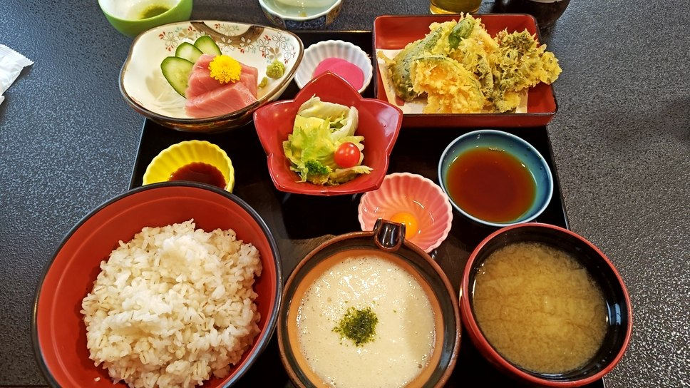
麦とろ御膳
当店一番人気。とろろに野菜天ぷらと本まぐろの刺身を添えた御膳です。
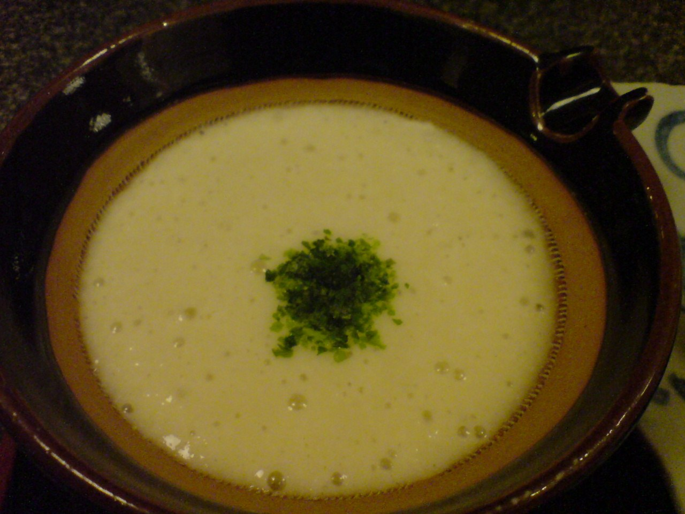
お時間が前後する日がございます。ご来店前にお電話いただけますと確実でございます。
0280-48-0251｜お電話でどうぞ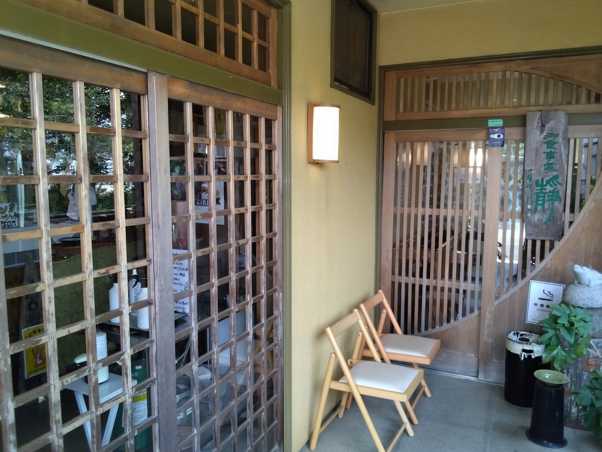
とろろに使う大和芋は、千葉県多古町の鷹大和芋を仕入れております。 すり鉢でおろすほどに白く艶が増し、麦飯にかけた瞬間からとろりと糸を引きます。 御膳もそばも丼もコロッケも、当店の料理はこの一芋でひと通りまかなっております。
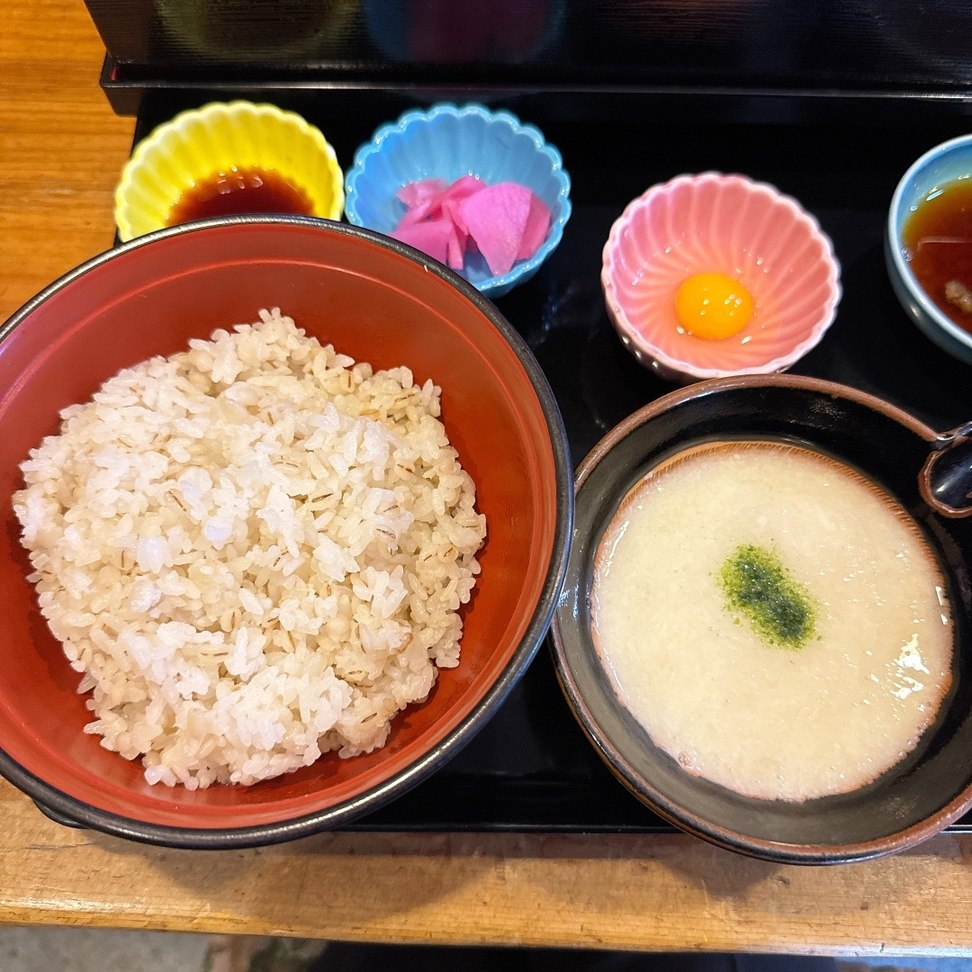
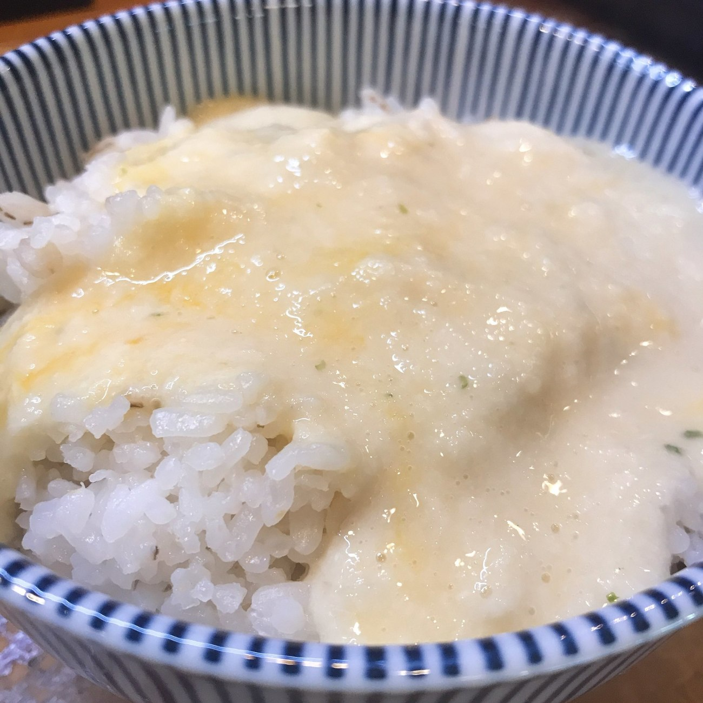
麦とろ御膳を軸に、6つの御膳をご用意しております。お値段は店内のお品書きに掲げております。お電話でもお答えいたします。

当店一番人気。とろろに野菜天ぷらと本まぐろの刺身を添えた御膳です。
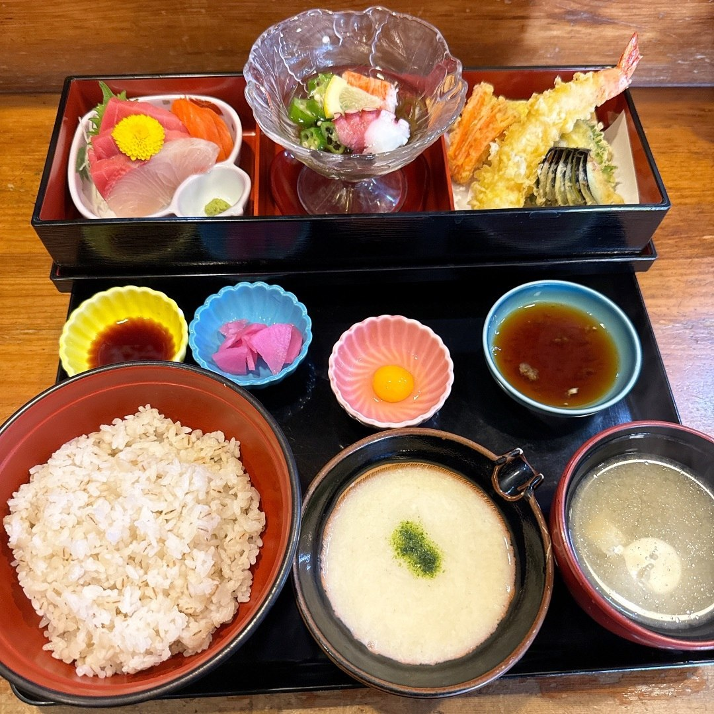
お刺身の盛り合わせに、海老と野菜の天ぷら、茶碗蒸し、もずく酢を添えた御膳です。
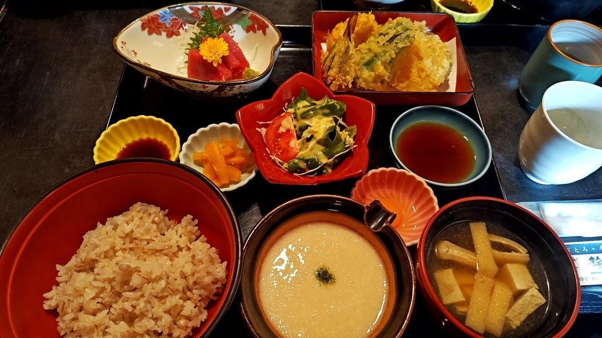
煮物の小鉢を添えて、少しずつ表情を変えてお出ししております。
当店の名物
大和芋をすりおろし、ひとつずつ丸めて手作りしております。 単品のほか、静膳や定食、テイクアウトでもお選びいただけます。
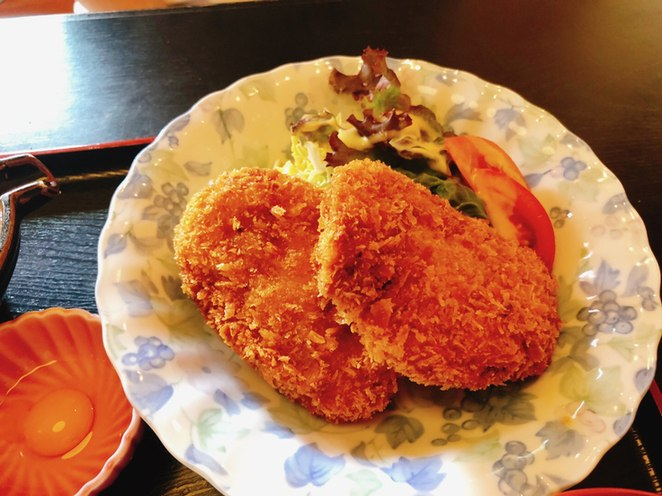
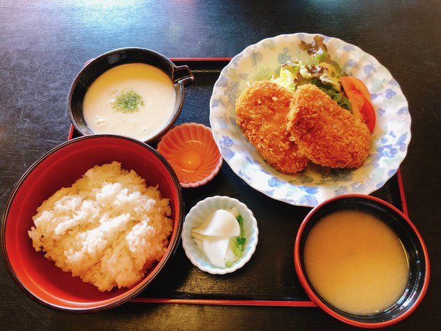
2階には、100名様までご利用いただけるお座敷がございます。 法事やお祝いの席にも、どうぞご利用ください。人数やご予算に合わせてご相談を承ります。 1階には個室もございます。お仕事の会食や少人数のお集まりにも、お使いいただけます。
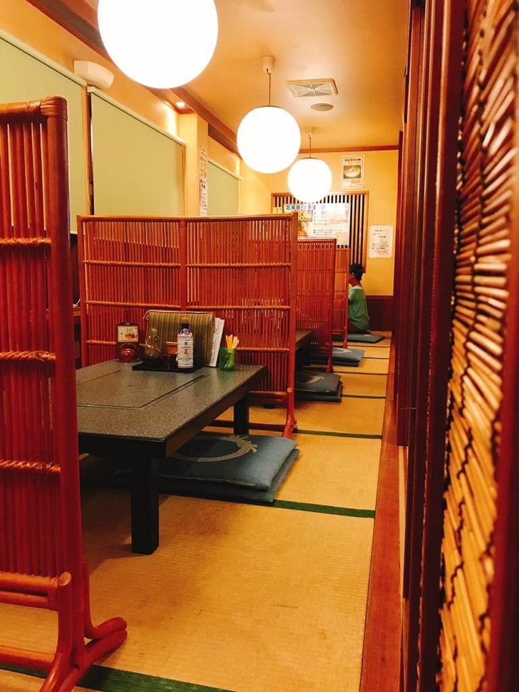
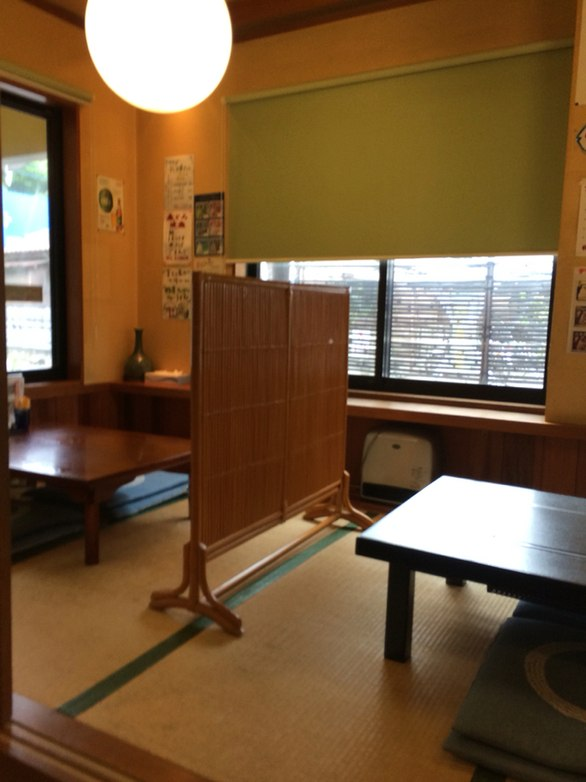
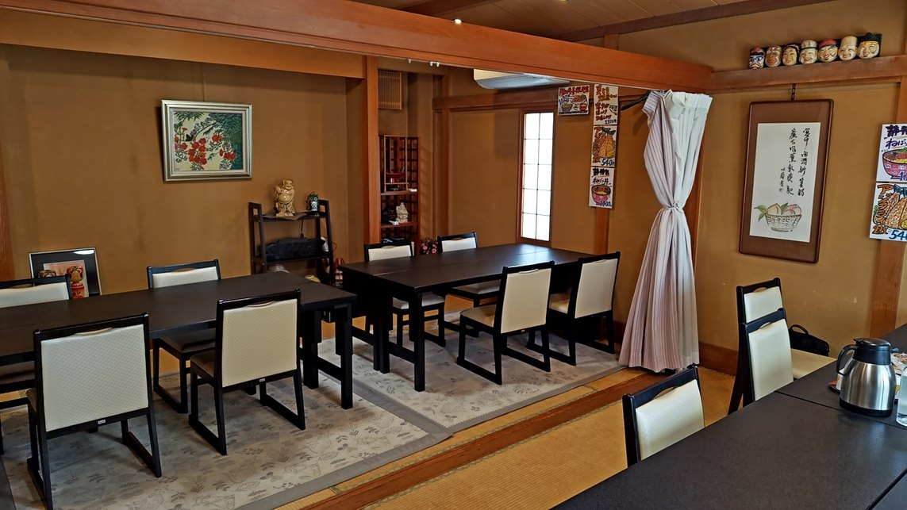
「ここ、何気に料理が旨いのです。一品一品手抜きなし。鮪が旨くてびっくり！蕎麦もコシがあって旨かった。」
2025年12月ご来店のお客様の声より
「蕎麦は田舎風の少し太いタイプで冷たく締められ腰が強く美味い！まぐろは新鮮で旨みが強く美味。」
2025年2月ご来店のお客様の声より
「同行の取引先と一緒にランチでお邪魔しました。とても美味しそうな麦とろを見つけて即予約。当日６人でしたが大丈夫ですよと。個室も取って頂き、麦とろ御膳を堪能。刺身、天ぷら、麦とろごはん！どれも美味い」
2025年6月ご来店のお客様の声より
| 住所 | 〒306-0044 茨城県古河市新久田289-2 |
|---|---|
| 営業時間 | 昼 11:30〜14:30／夜 18:00〜21:30 |
| 定休日 | 水曜日・第3木曜日 |
| 電話 | 0280-48-0251 |
| 駐車場 | ございます（台数はお電話でご確認ください） |
| お支払い | 現金・クレジットカード・電子マネー・QRコード決済 |
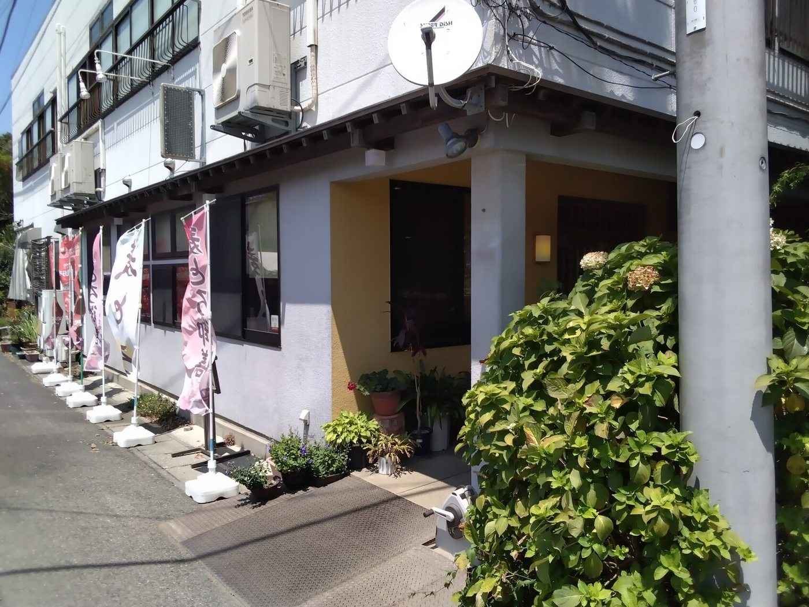
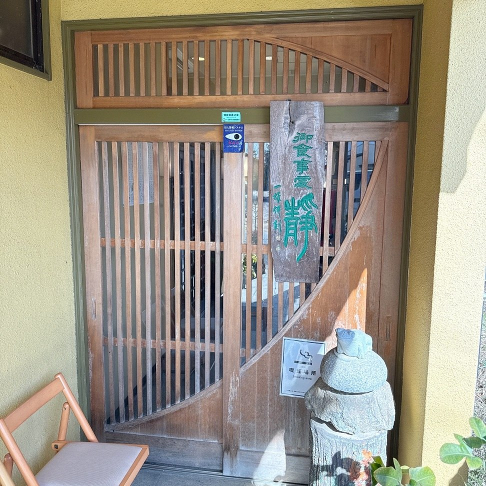